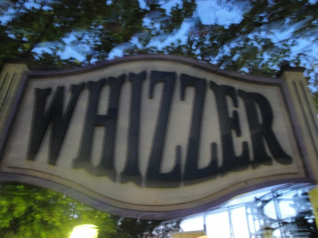
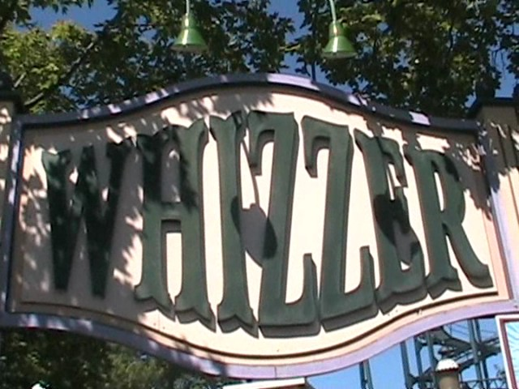

| |
Whizzer Review

We're here at Six Flags Great America. Today's ride we'll be reviewing for you is Whizzer. This is a very unique type of ride. It's one of the only two remaining Jumbo Jets in existance. And considering that the other one is in the middle of nowhere Colombia, this is the only one most of you will be riding. Anyways, after getting in the comfortable seats, you first head up the spiral lift. This is a very cool lifthill because it gives you a cool 360 degree view of Six Flags Great America, that and spiral lifts are just plain cool. Nuff said. Once you reach the top of the lift, you just see a long not steep drop. You first say, "That can't possibly be scary!!!" And no, it's not. But it is fun, and it does give you quite a bit of speed. A lot more than you would expect. But right as you gain all that speed, you quickly turn to the right and make a quick low to the ground curve that feels really fast and cool due to all the trees in the area. Then you simply rise up at a not steep angle up the next hill. We appear to have lost all our speed. But not to worry. We then drop back down tothe ground and then throw ourselves in a ground hugging helix. It's really fun and cool. After that, we rise up another hill, but we don't all our speed. And to make it better, we then appear to go around a small helix around the lifthill before dropping down to the ground. We then rise back up and around another hill and go through a nice dip before heading down into another spiral helix drop. That leaves us with our final ground hugging helix before we rise up into the brakes. I would totally recommend riding Whizzer if you are at Six Flags Great America. It may not be the greatest rollercoaster ever, but it's a really fun and unique attraction that should not be missed on any visit to Six Flags Great America.
6/10
Location: Six Flags Great America
Opened: 1976
Built by: Schwarzkopf
Last Ridden: August 12, 2010
Whizzer Photos


Home
|